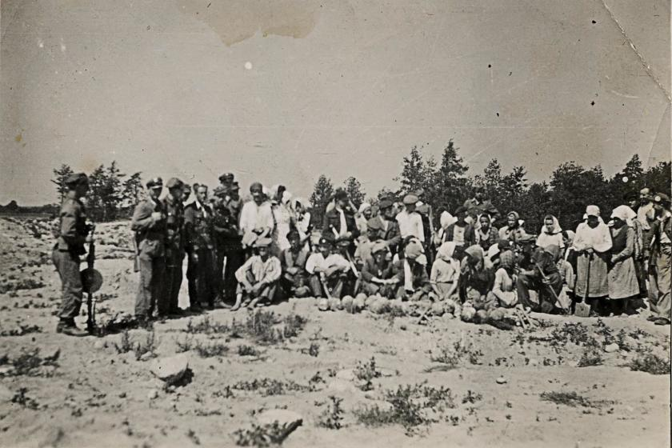

Resistance Efforts during the Holocaust | Homepage
- Introduction
- Overall Resistance Efforts
- Oskar Schindler
- Conclusion
- Works Cited
At the beginning of WWII, the Jews and other groups did not originally
resist the Nazi’s. This is because they did not want to be caught by them. Here is a quote that makes sense of this, “After the German occupation of Denmark in April 1940, a resistance movement began operations there; its activities included killing informers, raiding German military facilities, and sabotaging rail lines” (Non-Jewish Resistance). This is basically saying, that once The Nazi’s took control of the country of Denmark, they then started to resist the Nazi’s efforts to detain the Jews and other resisting groups. This is very important when regarding a certain individual that will be talked about very soon.
